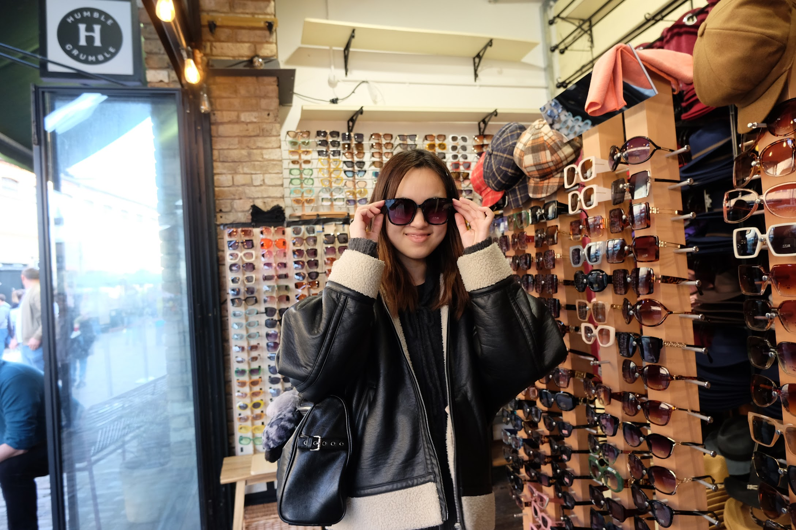

About Me

Hi, I'm Fuka. I'm currently studying Design Engineering and Computer Science at Brown University. I build interfaces and systems that remove seams and connect people. I care deeply about building with users through user-participatory design.
Outside of tech, you can find me throwing pottery, making my own clothes, or exploring cities on foot. This portfolio showcases a few stories of how I work and what I value. Thanks for viewing my work!